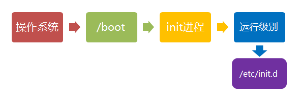
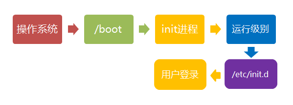
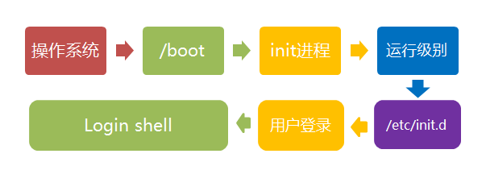

# Linux 系统启动过程 linux启动时我们会看到许多启动信息。
Linux系统的启动过程并不是大家想象中的那么复杂，其过程可以分为5个阶段：
- 内核的引导。
- 运行 init。
- 系统初始化。
- 建立终端 。
用户登录系统。
init程序的类型：
SysV: init, CentOS 5之前, 配置文件： /etc/inittab。
- Upstart: init,CentOS 6, 配置文件： /etc/inittab, /etc/init/*.conf。
- Systemd： systemd, CentOS 7,配置文件： /usr/lib/systemd/system、 /etc/systemd/system。
内核引导
当计算机打开电源后，首先是BIOS开机自检，按照BIOS中设置的启动设备（通常是硬盘）来启动。
操作系统接管硬件以后，首先读入 /boot 目录下的内核文件。
运行init
init 进程是系统所有进程的起点，你可以把它比拟成系统所有进程的老祖宗，没有这个进程，系统中任何进程都不会启动。
init 程序首先是需要读取配置文件 /etc/inittab。
运行级别
许多程序需要开机启动。它们在Windows叫做"服务"（service），在Linux就叫做"守护进程"（daemon）。
init进程的一大任务，就是去运行这些开机启动的程序。
但是，不同的场合需要启动不同的程序，比如用作服务器时，需要启动Apache，用作桌面就不需要。
Linux允许为不同的场合，分配不同的开机启动程序，这就叫做"运行级别"（runlevel）。也就是说，启动时根据"运行级别"，确定要运行哪些程序。
Linux系统有7个运行级别(runlevel)：
- 运行级别0：系统停机状态，系统默认运行级别不能设为0，否则不能正常启动
- 运行级别1：单用户工作状态，root权限，用于系统维护，禁止远程登陆
- 运行级别2：多用户状态(没有NFS)
- 运行级别3：完全的多用户状态(有NFS)，登陆后进入控制台命令行模式
- 运行级别4：系统未使用，保留
- 运行级别5：X11控制台，登陆后进入图形GUI模式
- 运行级别6：系统正常关闭并重启，默认运行级别不能设为6，否则不能正常启动
系统初始化
在init的配置文件中有这么一行： si::sysinit:/etc/rc.d/rc.sysinit 它调用执行了/etc/rc.d/rc.sysinit，而rc.sysinit是一个bash shell的脚本，它主要是完成一些系统初始化的工作，rc.sysinit是每一个运行级别都要首先运行的重要脚本。
它主要完成的工作有：激活交换分区，检查磁盘，加载硬件模块以及其它一些需要优先执行任务。
l5:5:wait:/etc/rc.d/rc 5
这一行表示以5为参数运行/etc/rc.d/rc，/etc/rc.d/rc是一个Shell脚本，它接受5作为参数，去执行/etc/rc.d/rc5.d/目录下的所有的rc启动脚本，/etc/rc.d/rc5.d/目录中的这些启动脚本实际上都是一些连接文件，而不是真正的rc启动脚本，真正的rc启动脚本实际上都是放在/etc/rc.d/init.d/目录下。
而这些rc启动脚本有着类似的用法，它们一般能接受start、stop、restart、status等参数。
/etc/rc.d/rc5.d/中的rc启动脚本通常是K或S开头的连接文件，对于以 S 开头的启动脚本，将以start参数来运行。
而如果发现存在相应的脚本也存在K打头的连接，而且已经处于运行态了(以/var/lock/subsys/下的文件作为标志)，则将首先以stop为参数停止这些已经启动了的守护进程，然后再重新运行。
这样做是为了保证是当init改变运行级别时，所有相关的守护进程都将重启。
至于在每个运行级中将运行哪些守护进程，用户可以通过chkconfig或setup中的"System Services"来自行设定。

建立终端
rc执行完毕后，返回init。这时基本系统环境已经设置好了，各种守护进程也已经启动了。
init接下来会打开6个终端，以便用户登录系统。在inittab中的以下6行就是定义了6个终端：
- 1:2345:respawn:/sbin/mingetty tty1
- 2:2345:respawn:/sbin/mingetty tty2
- 3:2345:respawn:/sbin/mingetty tty3
- 4:2345:respawn:/sbin/mingetty tty4
- 5:2345:respawn:/sbin/mingetty tty5
- 6:2345:respawn:/sbin/mingetty tty6
从上面可以看出在2、3、4、5的运行级别中都将以respawn方式运行mingetty程序，mingetty程序能打开终端、设置模式。
同时它会显示一个文本登录界面，这个界面就是我们经常看到的登录界面，在这个登录界面中会提示用户输入用户名，而用户输入的用户将作为参数传给login程序来验证用户的身份。
用户登录系统
一般来说，用户的登录方式有三种：
（1）命令行登录 （2）ssh登录 （3）图形界面登录

对于运行级别为5的图形方式用户来说，他们的登录是通过一个图形化的登录界面。登录成功后可以直接进入 KDE、Gnome 等窗口管理器。
而本文主要讲的还是文本方式登录的情况：当我们看到mingetty的登录界面时，我们就可以输入用户名和密码来登录系统了。
Linux 的账号验证程序是 login，login 会接收 mingetty 传来的用户名作为用户名参数。
然后 login 会对用户名进行分析：如果用户名不是 root，且存在 /etc/nologin 文件，login 将输出 nologin 文件的内容，然后退出。
这通常用来系统维护时防止非root用户登录。只有/etc/securetty中登记了的终端才允许 root 用户登录，如果不存在这个文件，则 root 用户可以在任何终端上登录。
/etc/usertty文件用于对用户作出附加访问限制，如果不存在这个文件，则没有其他限制。
图形模式与文字模式的切换方式
Linux预设提供了六个命令窗口终端机让我们来登录。
默认我们登录的就是第一个窗口，也就是tty1，这个六个窗口分别为tty1,tty2 … tty6，你可以按下Ctrl + Alt + F1 ~ F6 来切换它们。
如果你安装了图形界面，默认情况下是进入图形界面的，此时你就可以按Ctrl + Alt + F1 ~ F6来进入其中一个命令窗口界面。
当你进入命令窗口界面后再返回图形界面只要按下Ctrl + Alt + F7 就回来了。
如果你用的vmware 虚拟机，命令窗口切换的快捷键为 Alt + Space + F1 ~ F6. 如果你在图形界面下请按Alt + Shift + Ctrl + F1 ~ F6 切换至命令窗口。

Linux 关机
在linux领域内大多用在服务器上，很少遇到关机的操作。毕竟服务器上跑一个服务是永无止境的，除非特殊情况下，不得已才会关机。
正确的关机流程为：sync > shutdown > reboot > halt
关机指令为：shutdown ，你可以man shutdown 来看一下帮助文档。
例如你可以运行如下命令关机：
sync 将数据由内存同步到硬盘中。
shutdown 关机指令
你可以man shutdown 来看一下帮助文档。例如你可以运行如下命令关机：
shutdown –h 10 ‘This server will shutdown after 10 mins’ 这个命令告诉大家，计算机将在10分钟后关机，并且会显示在登陆用户的当前屏幕中。
shutdown –h now 立马关机
shutdown –h 20:25 系统会在今天20:25关机
shutdown –h +10 十分钟后关机
shutdown –r now 系统立马重启
shutdown –r +10 系统十分钟后重启
reboot 就是重启，等同于 shutdown –r now
halt 关闭系统，等同于shutdown –h now 和 poweroff
最后总结一下，不管是重启系统还是关闭系统，首先要运行 sync 命令，把内存中的数据写到磁盘中。
关机的命令有 shutdown –h now, halt, poweroff 和 init 0 , 重启系统的命令有 shutdown –r now, reboot, init 6。